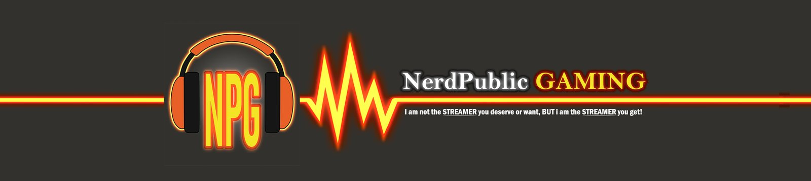
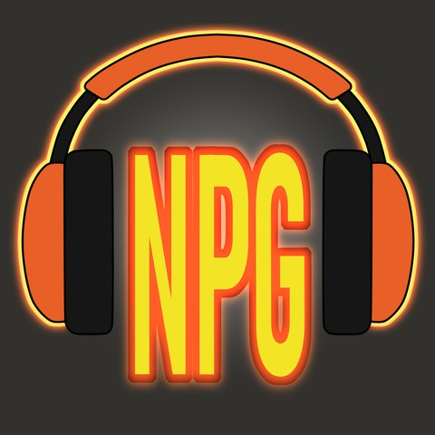

NerdPublic Gaming
„I am not the streamer you deserve or want, but I am the streamer you get!“
Status wird geladen …

Neueste Videos
Alle auf YouTube →Neueste Clips
Alle Clips auf Twitch →Guild Wars 2 Guides
Alle Fraktal-CM-Guides →Fraktal-CMs auf einen Blick: Jeder Guide beginnt mit dem, was im Challenge Mode neu ist. Du kennst den Normal Mode? Dann reicht das schon. Darunter kommen alle Mechaniken im Detail, Klassen-Statistiken und Tipps für jede Klasse.
Mechaniken nach den Guides von Hardstuck, Klassendaten von GW2 Wingman.

Über NerdPublic Gaming
Hier gibt's Reviews, Gameplays, Let's Plays, Guides, Tutorials, Unboxings und mehr. Einmal pro Woche läuft ein Livestream auf YouTube. Welches Spiel drankommt, stimmt ihr eine Woche vorher selbst ab.
NerdPublic Gaming ist der Neustart nach dem alten Kanal Gaming4u. Schwerpunkt im Moment: Guild Wars 2, Raids und Builds.